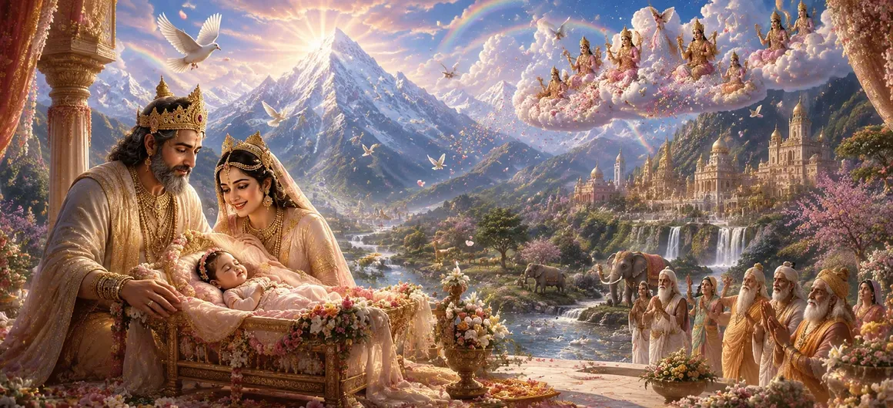

This chapter describes the extraordinary signs and divine omens that appeared throughout the worlds at the birth of Goddess Pārvatī. The heavens, the earth, and all living beings reflected joy and harmony, revealing that a sacred incarnation of Divine Shakti had arrived. These auspicious events announced the beginning of a new chapter in the cosmic plan.
At the moment of Pārvatī's birth, nature displayed remarkable harmony. Gentle breezes carried sweet fragrances, rivers flowed peacefully, and flowering trees bloomed in abundance. The natural world seemed to celebrate the arrival of the Divine Child.
The gods rejoiced in heaven upon hearing of the birth of Pārvatī. Celestial drums resounded, divine flowers showered from the skies, and the heavenly beings praised the Divine Mother whose incarnation would bring great blessings to creation.
A spirit of peace spread among all creatures. Old hostilities disappeared, minds became calm, and hearts were filled with happiness. The presence of Divine Shakti brought an atmosphere of unity and goodwill to the world.
Great sages observed these extraordinary signs and understood their deeper meaning. Through spiritual insight, they recognized that the newborn child was destined for a divine mission that would influence the fate of gods and humanity alike.
The Divine brings harmony wherever it manifests.
Sacred events are often accompanied by signs of divine favor.
Divine plans unfold at the proper time for the welfare of all.
The gods viewed these signs as confirmation that their prayers were being answered. They understood that the birth of Pārvatī marked the beginning of events that would eventually restore cosmic balance and strengthen dharma.
This chapter teaches that divine blessings leave visible marks upon the world. When sacred events occur, they inspire peace, joy, and hope, reminding humanity that the Divine remains actively present within creation.
The Himalayan kingdom shone with exceptional beauty during the birth of Pārvatī. Snow-covered peaks glimmered brightly, sacred birds sang melodious songs, and every corner of the land reflected divine joy.
The auspicious signs served as a message of hope to the world. They reminded all beings that whenever darkness seems strong, divine grace appears to guide creation toward harmony, righteousness, and spiritual awakening.
"Where divine grace appears, peace, joy, and auspiciousness follow."
The divine birth of Goddess Pārvatī was accompanied by extraordinary signs and celestial celebrations. Continue to the next chapter to discover the joyful childhood pastimes of the Divine Goddess and the early manifestations of her sacred nature.